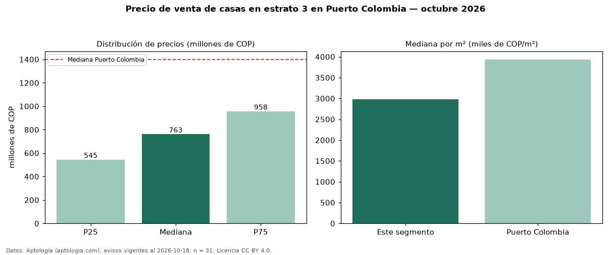

Precio de venta de casas en estrato 3 en Puerto Colombia — octubre 2026
Con 31 avisos vigentes, el precio mediano de casas en estrato 3 en venta en Puerto Colombia es COP 763 millones. Eso es 46 % menos que la mediana de las casas en venta de Puerto Colombia (COP 1,40 mil millones, n = 140); este segmento reúne el 22 % de esos avisos. Por metro cuadrado, la mediana es COP 2,98 millones/m² (n = 31), 24 % por debajo de las casas en venta de Puerto Colombia (COP 3,94 millones/m²). El área mediana anunciada es 330 m². El segmento con más oferta es el de 3 o más habitaciones (30 avisos, mediana COP 781 millones). La mitad central de los avisos va de COP 545 millones a COP 958 millones (razón 1,8), una dispersión moderada. Datos: Aptología (aptologia.com), CC BY 4.0 — https://www.aptologia.com/venta/puerto-colombia. Archivos: PDF, CSV con las cifras y gráfica PNG.

| Avisos únicos | 31 |
|---|---|
| Percentil 25 | COP 545.000.000 |
| Mediana | COP 762.736.000 |
| Percentil 75 | COP 957.500.000 |
| Mediana por m² | COP 2.976.190 |
Fuente: avisos vigentes de portales inmobiliarios recopilados por Aptología, deduplicados (mínimo 30 avisos únicos por celda). Precios pedidos, no cerrados. Fecha: 2026-10-18.